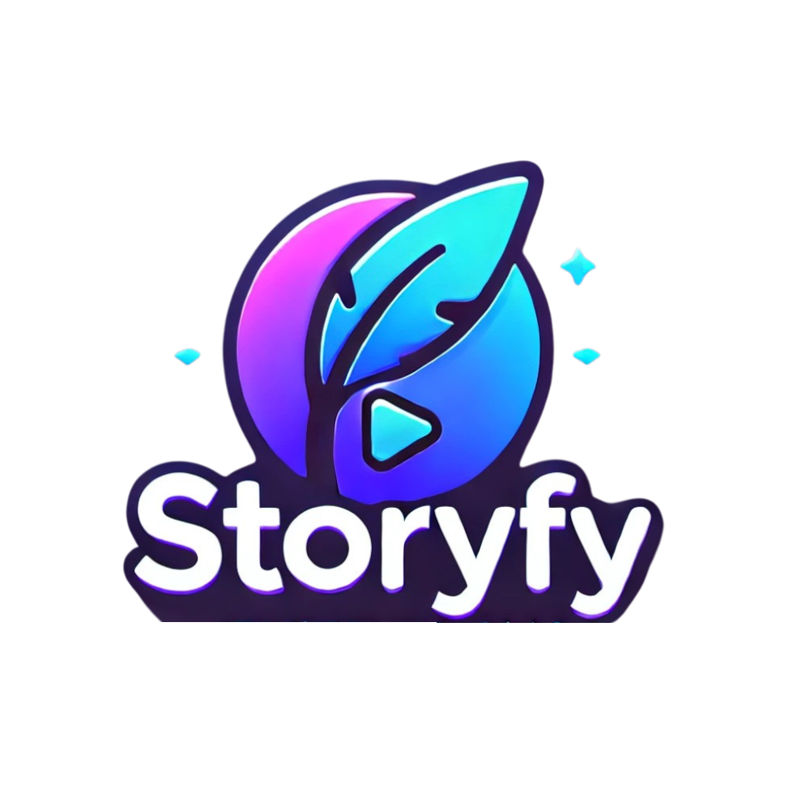

Sélectionnez une émission/série, ajoutez vos personnages et laissez l'IA générer votre histoire.
🔹 Choisissez une série parmi les options disponibles.
🔹 Ajoutez vos personnages avec leurs caractéristiques.
🔹 L'IA génère une histoire immersive en fonction de votre sélection.
✨ Expérience immersive : Transformez vos idées en un véritable épisode scénarisé.
⚡ Rapidité : En quelques minutes, obtenez une histoire complète et détaillée.
🎭 Personnalisation : Choisissez les personnages, l’ambiance et laissez la magie opérer.
"StoryFy m'a permis de créer un épisode de ma série préférée en y intégrant mes propres personnages. Bluffant !" - Lucas
"J’ai toujours rêvé d’écrire une fan-fiction interactive, et maintenant c’est possible en quelques clics !" - Marie
Soyez parmi les premiers à tester StoryFy et créez votre propre épisode.
Rejoindre la Beta